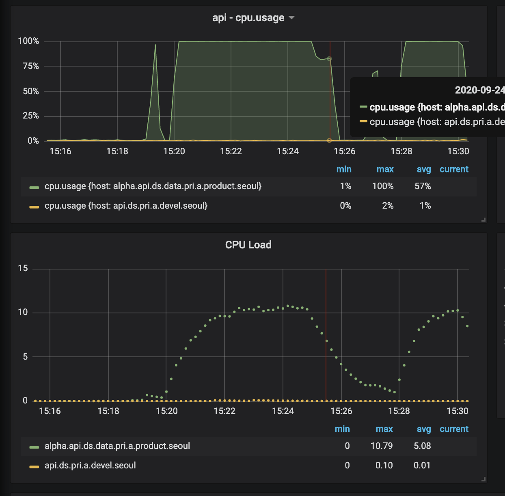
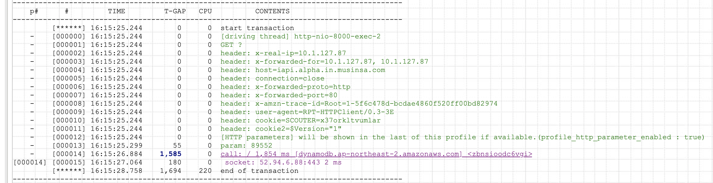
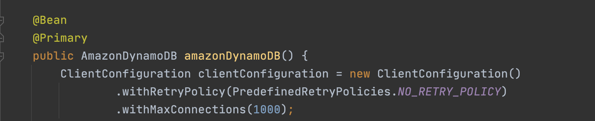
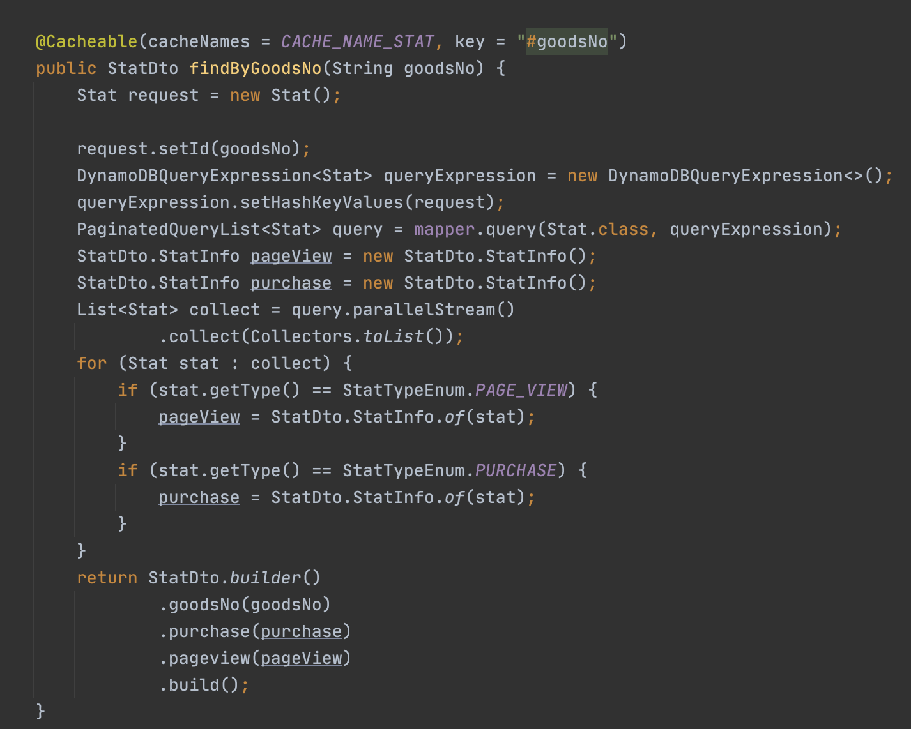
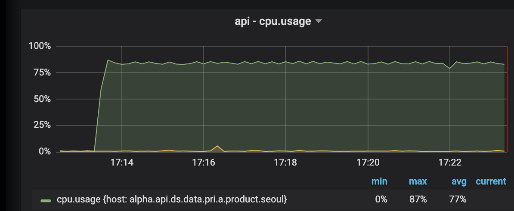
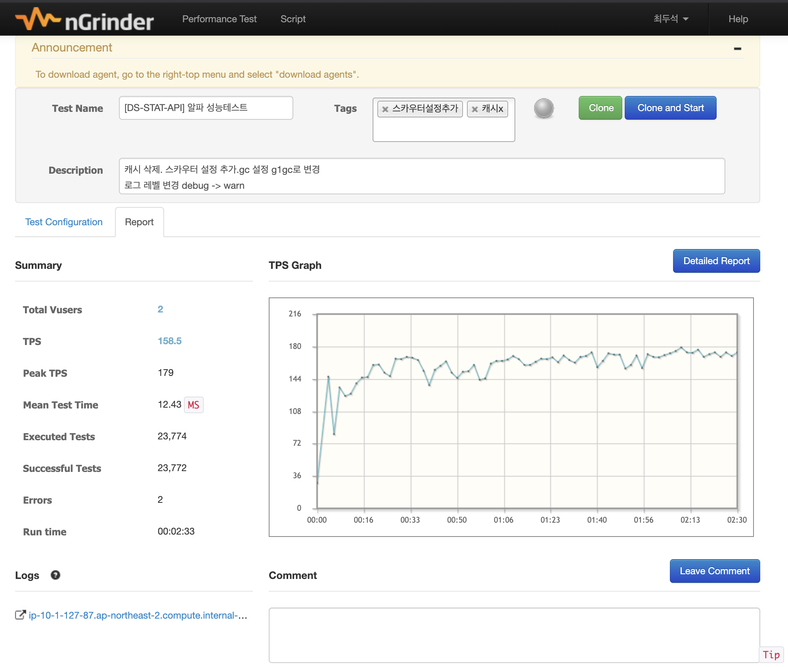
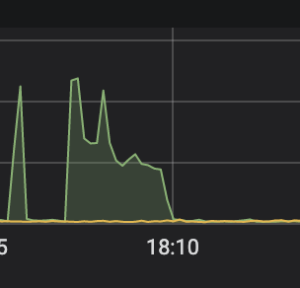

상품통계 범례 API 개발 완료 후 성능테스트 ¶
API 개발을 끝낸 후 성능테스트를 해야해서 ngrinder 설치 후 테스트 수행을 시작했다.
목표 성능 수치 : 180tps - 서버가 두대니 한대에 100정도만 나오면 좋겠다
처참한 성능
cpu 사용률 100% / cpu load 10.

성능테스트 결과
| TPS | 46.3 |
|---|---|
| Peak TPS | 54.5 |
| Mean Test Time | 173.42 ms |
| Executed Tests | 13,698 |
| Successful Tests | 13,698 |
문제가 무엇일까? ¶
첫번째 의심. ¶
스카우터 xlog 를 확인해보았는데 DDB( dynamodb response 시간이 1.5초나 걸리는것을 확인.)

ddb 설정 및 rcu(읽기 용량) 설정을 늘렸다.
하지만 결과는 변하지 않았다. ㅠㅜ (1)
두번째 의심 ¶
JAVA DDB client 풀을 늘려야 하나? mybatis 의 db 커넥션풀같은게 있으니 해당 풀에 접근하고 해제하는데 오래걸려서 문제가 생기지 않을까? 하는 의심을 했다.
파격적으로 maxConnection 100으로 설정했다.

하지만 결과는 변하지 않았다. ㅠㅜ (2)
세번째 의심. ¶
Spring data dyanmodb 요 아이가 성능이 안나오나? 그러면 그냥 aws에서 제공하는 sdk 를 사용해서 해보자.

하지만 결과는 변하지 않았다. ㅠㅜ (3)
포기. 서버 성능을 높이자 ¶
t3.small → c5.xlarge
무려 cpu 4코어 짜리다.
역시 돈이다! 기존 t3.small 보다 무려 2배
| TPS | 99 |
|---|---|
| Peak TPS | 132 |
| Mean Test Time | 40.19 ms |
| Executed Tests | 59,027 |
| Successful Tests | 59,023 |
| Errors | 4 |
cpu 도 75% 사용. 그래도 높지만 기존 아이들 생각하면 엄청난 차이다. 좋네 이렇게 할까..?

다시 한번 더 코드를 확인 해보자. ¶
유환성 팀장님 같이 코드를 보면서 의심되는 부분을 하나씩 확인해보았다.
유 : 정확하게 무슨 일을 할까요? 나: 이런 저런 일을 하고 있어요. 유: 그럼 이건 무슨 일을 할까요? 나: 이건 이런 저런 일을 해요. 유: 혹시 로그 레벨은 info 인가요? 나: …… debug 네요..
한가지 자기 변호를 해보자면 기존 회사에서는 alpha 는 개발이었다. 알파의 log level 을 debug 로 해놓은 상태였다.
| 무신사 | 기존회사 |
|---|---|
| devel | alpha |
| alpha | beta |
| prod | release |
마지막 결과. ¶

| TPS | 158.5 |
|---|---|
| Peak TPS | 179 |
| Mean Test Time | 12.43 ms |
| Executed Tests | 23,774 |
| Successful Tests | 23,772 |
cpu 사용률
50프로 미만 정상동작 한다. ㅠㅜ 기쁘다..

DDB RCU
여섯시쯤에 파랗게 뾰족하게 뒤어나온 아이가 테스트 했을때의 그래프이다.
최대 30개까지 썼으니 운영에서 사용할땐 적어도 30이상으로 사용을 해야겠다.
결론. ¶
허무하지만.. 그래도 소스코드 문제가 아니어서 다행이었다.
여기서 얻은 교훈은 문제가 없다고 생각되면 설정부터 차근차근 하나씩 보면서 확인을 하자
로그 설정 DEBUG는 운영에 나가면 안된다.